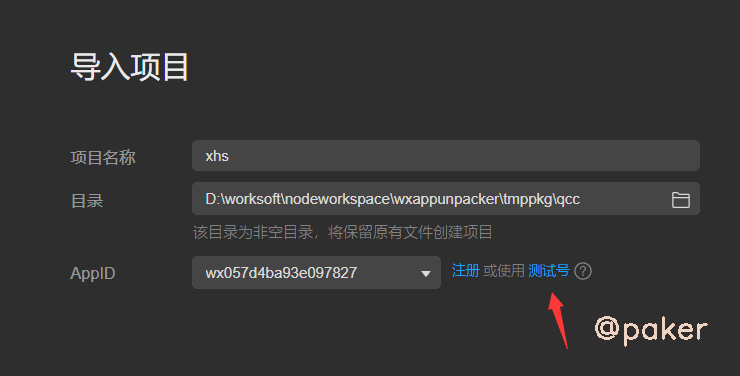
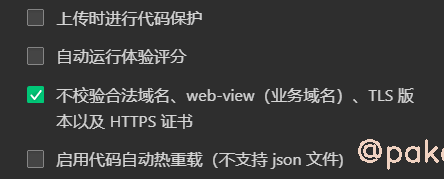
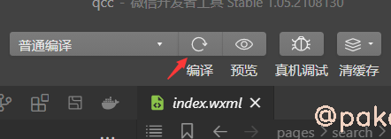
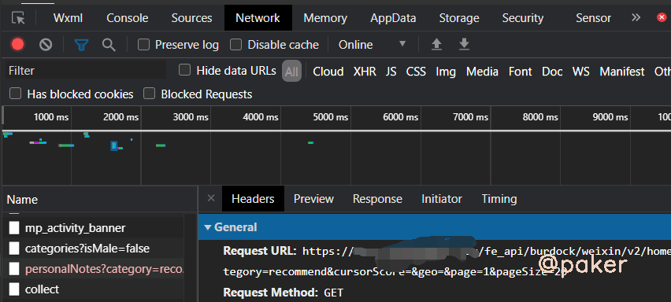
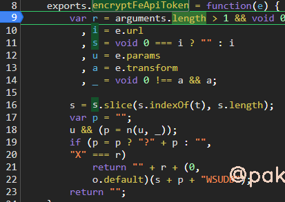
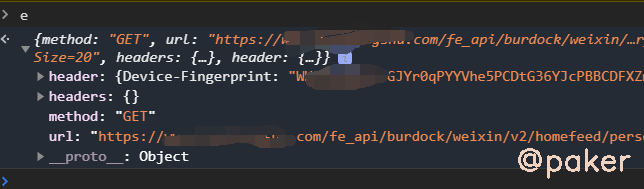
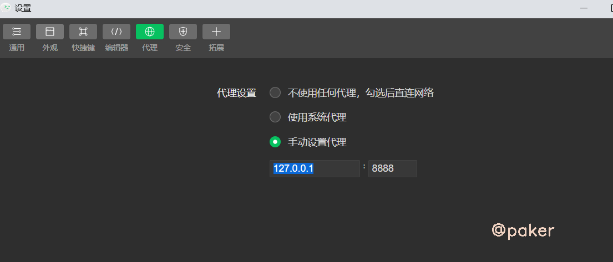
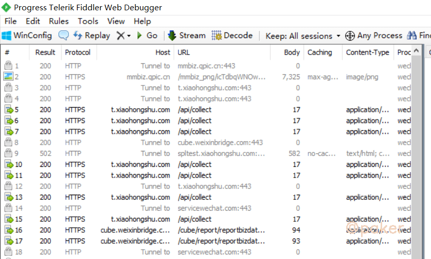

微信小程序逆向(二)动态调试
上一篇我们获取到了解包反编译后的小程序文件，此篇使用微信开发者工具，让程序运行起来，动态调试。
微信开发者工具下载地址：https://developers.weixin.qq.com/miniprogram/dev/devtools/download.html
1.导入项目
选择上一篇解包得到的xhs文件夹，使用测试号即可

一个重要的设置：设置-》项目设置-》不校验合法域名，这个要勾选上

2.常见的编译报错

当点了编译后，在控制台一般会输出几种报错，需要自己处理一下
报错一
[ WXML 文件编译错误] ./pages/search/index/index.wxml Bad attr
filterStylewith message 20 |{{''+item.name+''}} 21 |22 |
找到对应文件位置，将filterStyle="{{top:0}}" 修改为 filterStyle="top:0" ，filterStyle多了两个大括号
报错二
TypeError: _typeof3 is not a function at _typeof (typeof.js? [sm]:2)
@babel\runtime\helpers文件夹下面的typeof.js报错，因为本地装过这个包npm install --save @babel/runtime，直接进去拷一份typeof.js覆盖就好了，新typeof.js如下
function _typeof(obj) {
"@babel/helpers - typeof";
if (typeof Symbol === "function" && typeof Symbol.iterator === "symbol") {
module.exports = _typeof = function _typeof(obj) {
return typeof obj;
};
module.exports["default"] = module.exports, module.exports.__esModule = true;
} else {
module.exports = _typeof = function _typeof(obj) {
return obj && typeof Symbol === "function" && obj.constructor === Symbol && obj !== Symbol.prototype ? "symbol" : typeof obj;
};
module.exports["default"] = module.exports, module.exports.__esModule = true;
}
return _typeof(obj);
}
module.exports = _typeof;
module.exports["default"] = module.exports, module.exports.__esModule = true;
3.调试
正常会在network下看到请求的数据包

上一篇静态分析，根据字符串搜索我们已经定位到了x-sign加密函数的位置，下个断点看看

传入的参数e

追到这 s + p + "WSUDD"，发现和pc web端一模一样的加密方式，就是做了"X"+md5(api+"WSUDD")
import hashlib
x_sign = "X"
m = hashlib.md5()
m.update((api+"WSUDD").encode())
x_sign = x_sign + m.hexdigest()
4.fiddler如何抓到微信开发者工具调试的包
微信开发者工具-》设置-》代理设置（默认是使用系统代理），打开fiddler，修改为手动设置代理

这样就能在fiddler抓到微信开发者调试工具的包了
